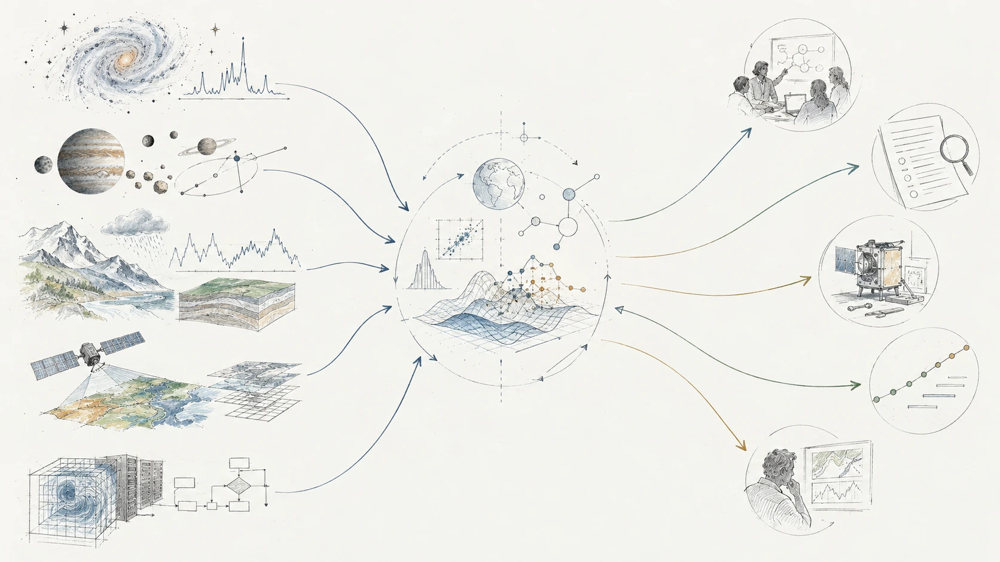

Scientific modeling and simulation
Develop or assess physical and numerical models, test assumptions and sensitivities, and connect model behavior to the scientific or engineering question being asked.
My background spans astrophysics, planetary science, geoscience, remote sensing, physical modeling, and scientific computing. That mix is useful not only for research questions, but also for technology development, mission and instrument concepts, and independent technical review.
I am particularly interested in problems related to space exploration, Earth observation, climate science and technology, and other areas where physical understanding, measurements, models, data, and engineering choices have to be considered together.
I’m open to exploratory conversations about consulting, advisory work, or collaboration.

Develop or assess physical and numerical models, test assumptions and sensitivities, and connect model behavior to the scientific or engineering question being asked.
Work with observational or experimental measurements, including instrument behavior, calibration, validation, uncertainty, and what the data can reasonably support.
Build or review quantitative workflows for analysis, simulation, visualization, and reproducible scientific work, including large or heterogeneous datasets.
Evaluate technical concepts, technology readiness, measurement approaches, trade studies, risks, and assumptions. This can include TRL-oriented assessment, red-team review, and independent critique of mission, instrument, or technology-development plans.
Relevant areas include: space exploration, Earth observation, climate science and technology, scientific instrumentation, and research-driven technology development.
I don’t publish a personal email address, phone number, or contact form here. For research, collaboration, or exploratory consulting questions, send me a message on LinkedIn.
LinkedIn ↗